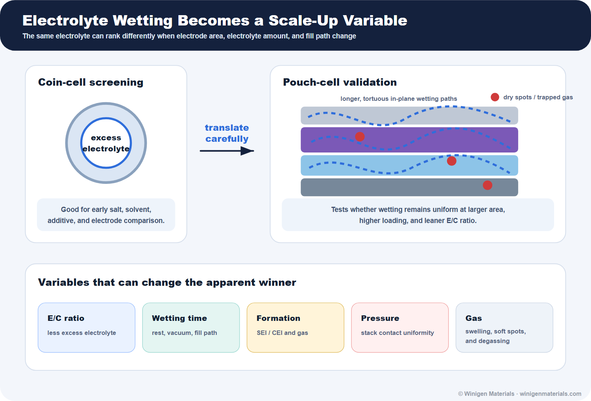
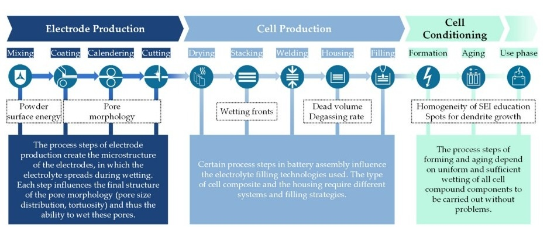
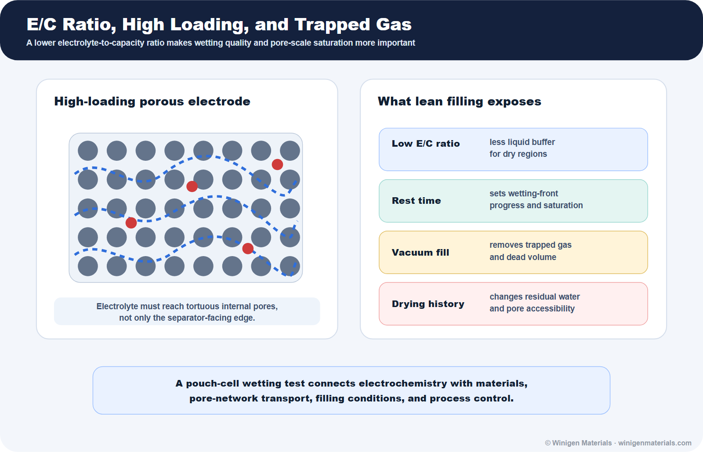
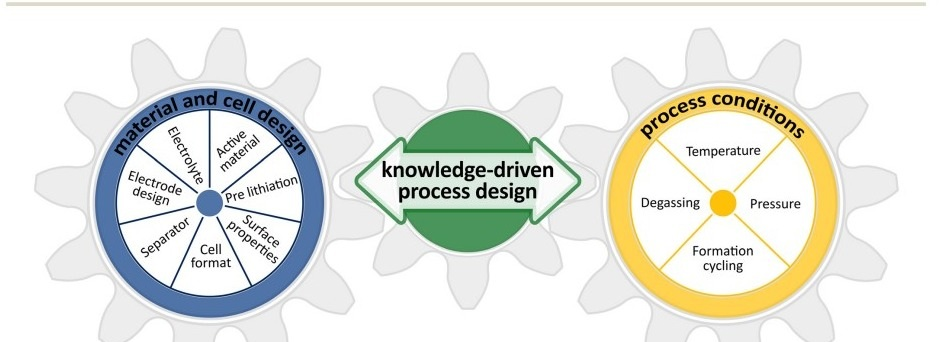
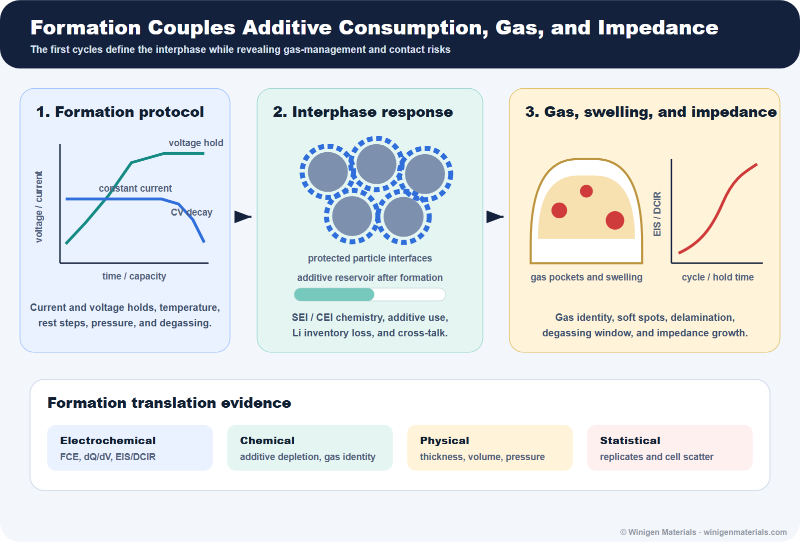
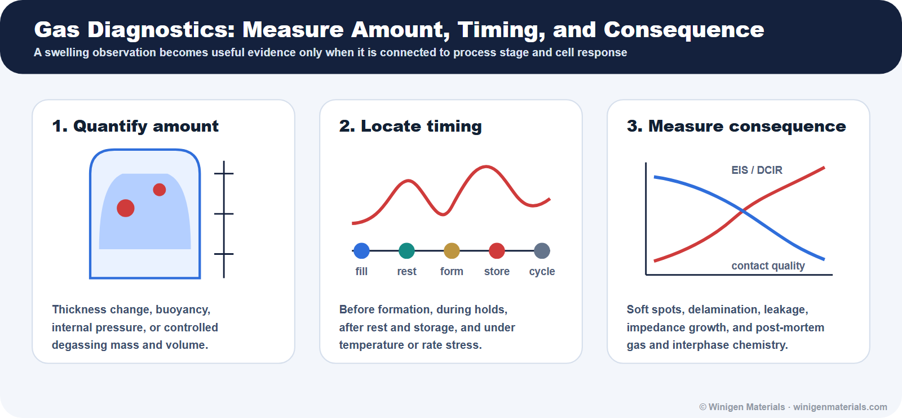
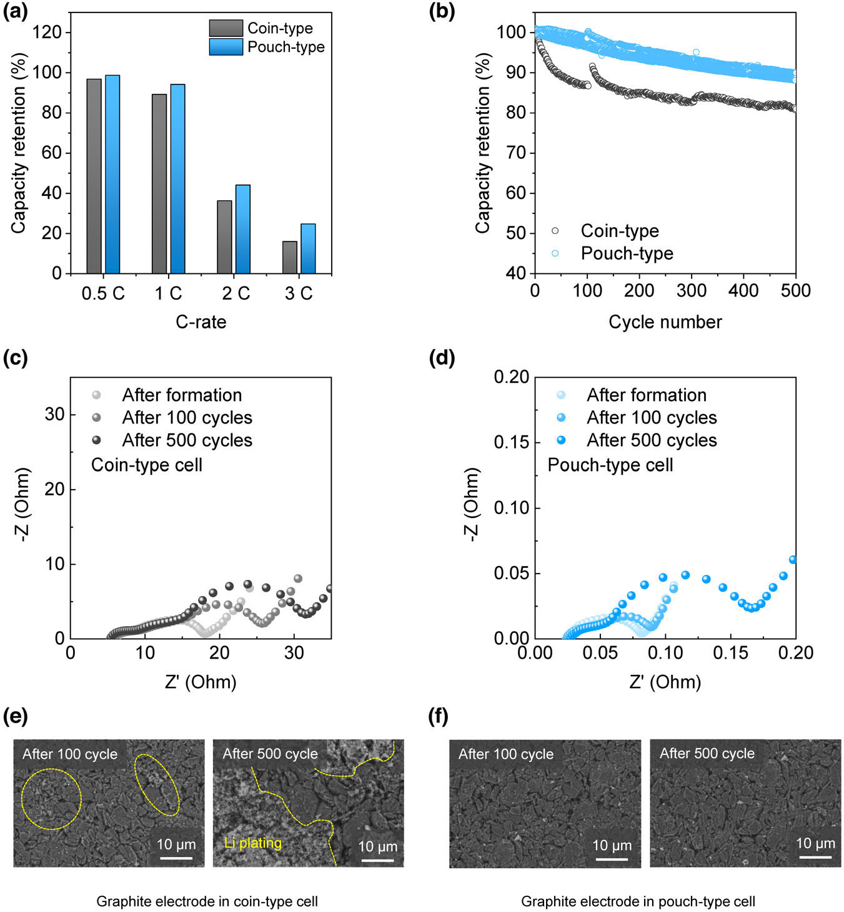
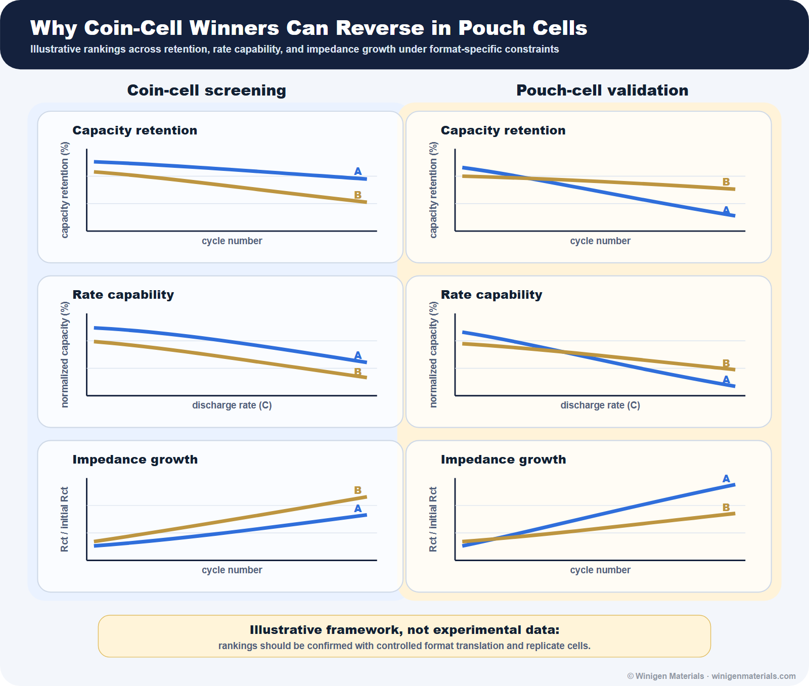

This article is a follow-up to Part 1: How to Validate Battery Materials Before Scale-Up. The first article built the broader validation ladder. This second article goes deeper into the most common translation trap: a chemistry can rank well in a coin cell but rank differently in a pouch cell because the format changes wetting, electrolyte amount, formation, gas handling, pressure, and impedance.
The point is not that coin cells are unreliable. Coin cells are excellent for early material discovery, mechanism screening, electrolyte/additive comparison, and low-material-demand experiments. The point is that pouch cells test additional variables that a coin-cell fixture often masks or over-simplifies.

1. Why Coin Cells Are Still Useful
Coin cells are the right first tool when the question is narrow: Does a cathode deliver expected capacity? Does a silicon anode improve with an additive? Does a lithium salt or solvent blend support acceptable first-cycle efficiency and impedance? Does a solid-state or hybrid material show basic compatibility with the electrode pair?
They are also practical. Coin cells require less material, can be assembled quickly, and support controlled side-by-side comparisons. A well-designed coin-cell screen can identify poor candidates before expensive pouch-cell builds. Research-cell reviews emphasize that cell type should be chosen according to the test question; no single format answers every electrochemical and engineering question.[2]
Many materials papers use coin cells for discovery and pouch cells for demonstration, but the translation step is often treated as confirmation rather than a separate experiment with its own wetting, formation, gas, pressure, and manufacturing variables. The problem begins when coin-cell ranking is treated as format-independent evidence of pouch-cell readiness. Son and co-workers compared coin and pouch cells using the same electrode materials, electrolyte, and electrochemical conditions, then showed that impedance and electrochemical interpretation can change substantially with format.[1] That makes coin cells a discovery filter, not a final scale-up proof.
| Coin-cell result | Often translates? | Translation risk |
|---|---|---|
| Basic cathode/anode capacity | Often yes | Depends on loading, utilization, and electrode design. |
| Relative electrolyte/additive ranking | Sometimes | Can change with E/C ratio, gas, formation, and pouch wetting. |
| Early CE / FCE | Partly | Formation protocol and electrolyte amount can shift results. |
| EIS trends | Sometimes | Absolute impedance may be format-dependent. |
| Gas behavior | Often no | Coin cells may hide swelling and degassing problems. |
| Lithium plating risk | Often no | Depends on area, pressure, N/P ratio, temperature, and current distribution. |
2. Why Pouch Cells Change the Question
A pouch cell introduces larger electrode area, current-collector tabs, more realistic N/P ratio, lower tolerance for electrolyte excess, longer wetting distance, observable swelling, degassing requirements, sealing variation, and nonuniform pressure. These are not minor details. They can change the effective impedance, local current density, gas behavior, and cycling failure mode.
E/C ratio, usually reported as grams of electrolyte per ampere-hour of cell capacity, is one of the most important translation variables because electrolyte-rich coin cells can mask wetting, transport, gas, and additive-depletion problems that appear under leaner pouch-cell conditions.
| Translation variable | Why it is muted in coin cells | Why it matters in pouch cells |
|---|---|---|
| Electrolyte amount / E/C ratio | Coin cells often use excess electrolyte. | Lean electrolyte exposes wetting limits, dry regions, additive depletion, and transport resistance. |
| Wetting path | Small area and compressed geometry shorten the filling problem. | Large electrodes can retain dry spots, trapped gas, and slower saturation. |
| Formation gas | Rigid hardware can hide swelling. | Pouch cells visibly swell, soften, delaminate, and require post-formation degassing. |
| Pressure uniformity | Spring/spacer compression is fixture-specific; effective pressure can vary strongly with spacer thickness, spring constant, crimp force, and stack height. | Large-area pressure gradients affect contact, lithium plating, silicon swelling, and solid-solid interfaces. |
| Current distribution | Small electrodes reduce tab and in-plane gradients. | Tabs, coating uniformity, and current path can affect local polarization and aging. |
| Manual electrode alignment | Manually prepared coin cells can introduce cathode-anode overlap mismatch. | Larger pouch electrodes can reduce relative edge mismatch, while making alignment and coating uniformity measurable process controls. |
This is why a pouch cell is not merely a bigger coin cell. It is a different experiment that tests whether material chemistry and process engineering work together.
3. The Mechanistic Reason Rankings Change: Local Ionic Pathways, Not Just Bulk Chemistry
Many coin-to-pouch ranking changes are not caused by a different intrinsic reaction mechanism. They arise because the same electrolyte or material is being tested under a different local transport environment. Son et al. showed that cell format can materially change impedance behavior even when electrode materials, electrolyte, and electrochemical conditions are held constant.[1]
In an electrolyte-rich coin cell, the electrode stack may have enough liquid inventory to compensate for imperfect wetting, local porosity variation, or slow electrolyte redistribution. In a pouch cell, especially under lower E/C ratio and higher areal loading, local ionic pathways become more important. A partially wetted region can show higher local resistance, lower active-material utilization, stronger polarization, and higher effective current density in neighboring regions.
The coupling can become self-reinforcing. Electrolyte starvation increases local ionic resistance; ionic current and local reaction rate redistribute toward better-wetted, lower-resistance regions; those regions experience stronger polarization and potentially higher local heat generation; and nonuniform interphase growth or gas evolution can further reduce contact. High-loading electrodes amplify this sensitivity because longer pore pathways and greater tortuosity increase the transport demand per unit geometric area. Pore-scale filling work by Lautenschlaeger et al. connects saturation and residual gas with particle size, binder distribution, pore structure, and wetting behavior.[5]
This can change the apparent ranking of formulations. An electrolyte that performs well in a small, electrolyte-rich format may lose its advantage if it has poorer wetting kinetics, higher viscosity, stronger gas generation, faster additive depletion, or larger impedance rise after formation. Conversely, a formulation with only modest coin-cell improvement may become more attractive if it wets high-loading electrodes more uniformly, generates less gas, or produces a lower-resistance interphase after pouch-cell formation.
The reverse can therefore happen as well: a material that looks only modest in a coin cell may become more competitive in a pouch cell if it wets better, gases less, or forms a more stable interphase under the actual formation protocol.
For this reason, pouch-cell validation should not report capacity retention alone. Retention should be connected with EIS/DCIR evolution, formation efficiency, swelling, wetting protocol, E/C ratio, electrode porosity, areal loading, and replicate-cell scatter.
4. Wetting Is a Hidden Translation Variable
Electrolyte filling and wetting are quality-critical manufacturing steps. Kaden and co-workers reviewed how wetting depends on the entire production chain, including mixing, coating, calendering, drying, stacking, filling, formation, and aging.[3] A cathode or anode can look chemically sound and still fail because pore structure, binder distribution, calendering density, separator wettability, or rest time prevents uniform electrolyte saturation.

Pouch validation therefore needs wetting metadata. Record electrolyte mass, E/C ratio, fill temperature, vacuum level, vacuum hold, injection sequence, rest time before formation, cell orientation, separator type, electrode porosity, electrode loading, calendered density, and drying history. Without those details, a failed pouch build may be misdiagnosed as a poor additive or salt.

5. Formation Is Not Just the First Cycle
Formation is a cell-finishing process. It defines SEI and CEI chemistry, consumes additives, consumes lithium inventory, generates gas, changes impedance, and determines whether the cell needs degassing and resealing before meaningful cycling. Schomburg and co-workers describe formation as an interlocking problem between material/cell design and process conditions such as temperature, pressure, formation cycling, and degassing.[4]

For electrolyte and additive screening, this matters because some additives are intentionally consumed during formation. A formulation that looks excellent in an electrolyte-rich coin cell may consume too much additive, generate too much gas, or build a resistive interphase under pouch-cell formation conditions. Conversely, a formulation that looks modest in an early coin test may perform better after an optimized fill, rest, and formation protocol.
Minimum formation data to request includes formation current and voltage profile, temperature, stack pressure or fixture condition, rest time before formation, degassing timing, first-cycle efficiency, dQ/dV or voltage profile during formation, EIS/DCIR before and after formation, thickness change or gas volume, and post-formation OCV/self-discharge.

6. Gas Generation Becomes Visible in Pouch Cells
Gas evolution can lead to pouch swelling, smoking, and device-level failure, and gas monitoring can reveal dynamic chemical events such as SEI formation, electrode structural change, and electrolyte degradation.[6] In practical pouch development, gas is not just a safety note. It is a diagnostic signal.
A good gas-and-swelling screen should distinguish formation gas, storage gas, high-temperature gas, high-voltage gas, and gas generated during aggressive rate or low-temperature operation. It should also distinguish gas volume from gas consequence: a small amount of gas may be manageable if degassing and sealing are robust, while localized gas pockets can create soft regions, contact loss, delamination, and current-density gradients.

7. Why Coin-Cell Winners Can Fail in Pouch Cells
Ranking reversal is not mysterious when the hidden variables are named. An additive may improve first-cycle efficiency in a coin cell but gas excessively during pouch formation. A low-viscosity solvent blend may improve rate performance but wet a high-loading electrode poorly or increase volatility. A fast-charge formulation may look strong at small area but become pressure- or temperature-sensitive in a pouch stack. A silicon-rich anode may perform in a coin fixture but swell enough in a pouch cell to damage contact uniformity.
Son et al. reported that impedance, rate performance, cycling stability, and lithium plating signatures differed between coin and pouch cells even with matched materials and electrochemical conditions.[1] The lesson is not that coin-cell ranking is useless. The lesson is that final ranking should be based on a controlled translation test.
In coin-to-pouch translation, impedance should not be treated as a single number. Ohmic resistance can shift with electrolyte amount, separator wetting, tab geometry, and current-collector path. Interfacial resistance can shift with formation protocol, additive consumption, CEI/SEI chemistry, contact loss, and gas pockets. Diffusion or low-frequency impedance can shift with electrode loading, tortuosity, and local electrolyte starvation. This is why EIS before formation, after formation, and during aging is more useful than a single end-of-test impedance value. EIS should be compared at matched SOC, temperature, rest time, and compression condition.
A translation study should not compare one coin cell against one pouch cell. Replicate count, cell-to-cell scatter, failure distribution, and outlier behavior matter because pouch cells introduce more process variables than coin cells. Ranking confidence should come from a controlled lot, a documented process, and enough replicate cells to separate material effects from assembly variation.


8. Practical Validation Checklist
For a serious coin-to-pouch translation study, report the following items before interpreting pouch-cell ranking as a materials conclusion.
| Category | Minimum useful evidence | Why it matters |
|---|---|---|
| Electrolyte amount | Electrolyte mass, E/C ratio, fill sequence, vacuum level, fill temperature. | Separates chemistry from lean-wetting limitations. |
| Wetting | Rest time, separator type, electrode porosity, calendered density, dry-room history. | Controls local ionic access and early impedance. |
| Formation | Current profile, voltage holds, temperature, pressure, dQ/dV, FCE, CE, EIS/DCIR before and after formation. | Determines SEI/CEI, additive consumption, irreversible capacity, and impedance. |
| Gas and swelling | Thickness change, gas volume, degassing timing, soft spots, storage swelling. | Exposes failure modes that coin cells can hide. |
| Electrode design | Loading, density, thickness, N/P ratio, areal capacity, tab design, coating uniformity. | Controls transport, current distribution, and realistic energy density. |
| Pressure | Applied pressure, fixture design, pressure uniformity, stack compression history. | Critical for silicon, lithium metal, solid-state, hybrid, and high-loading systems. |
| Failure analysis | Post-mortem SEM, XPS, ICP, gas analysis, plating check, delamination check. | Turns a failed pouch cell into actionable mechanism evidence. |
9. Quantitative Metadata That Should Accompany Pouch-Cell Translation Data
A pouch-cell result is difficult to interpret without quantitative metadata. The following values help separate material effects from electrode, assembly, and process effects.
| Parameter | Recommended reporting format | Why it matters |
|---|---|---|
| E/C ratio | g electrolyte per Ah, plus total electrolyte mass | Controls lean-electrolyte stress, wetting margin, and additive inventory. |
| Areal capacity | mAh/cm² for cathode and anode | Determines practical transport demand and relevance to high-energy cells. |
| Electrode loading | mg/cm2 and active-material wt% | Connects material utilization with electrode architecture. |
| Electrode porosity / density | % porosity or g/cm3 after calendering | Controls wetting kinetics, tortuosity, and ionic resistance. |
| N/P ratio | Capacity ratio based on practical reversible capacity | Affects lithium inventory, plating risk, and full-cell interpretation. |
| Formation protocol | C-rate, voltage holds, temperature, rest time, pressure | Controls SEI/CEI chemistry, gas evolution, and early impedance. |
| Pressure condition | psi or MPa, fixture type, and pressure uniformity if known | Important for lithium metal, silicon, solid-state, and high-loading electrodes. |
| Gas / swelling | Thickness change %, gas volume, or degassing mass/volume | Reveals parasitic reactions and pouch-specific reliability risk. |
| Impedance | Ohmic, interfacial, and low-frequency contributions; test temperature and SOC | Separates wetting/contact changes from charge-transfer and transport limitations. |
| Replicates | n value, mean, standard deviation, and failure count | Separates true material ranking from build variation. |
These metadata requirements lead directly to the next question: before purchasing a new salt, additive, active material, separator, or solid-state electrolyte, what supplier data are needed to judge whether the material is ready for coin-cell screening, pouch-cell validation, or pilot-scale procurement?
Winigen Perspective
Winigen Materials supplies lithium salts, next-generation salts, low-moisture solvents, electrolyte additives, battery active materials, solid-state electrolytes, and custom electrolyte formulations. Material access is only part of scale-up. Winigen can also arrange development, testing, and validation of customer materials, processes, and application requirements with strategic partners, connecting candidate selection to the target cell format and evidence plan.
For a pouch-cell program, the right question is not simply, "Which salt or additive gave the best coin-cell retention?" A better question is: "Which material set gives reproducible performance when electrolyte amount, wetting, formation, gas, pressure, N/P ratio, and electrode loading are controlled?"
Discuss Your Pouch-Cell Translation Plan
Share your cell chemistry, electrode loading, electrolyte system, target E/C ratio, formation protocol, and current failure mode. Winigen can help identify relevant materials and coordinate development, testing, and validation with strategic partners where the program requires additional process or cell-level capability.
Contact Winigen MaterialsReferences
- Son, Y.; Cha, H.; Lee, T.; Kim, Y.; Boies, A.; Cho, J.; De Volder, M. Analysis of Differences in Electrochemical Performance Between Coin and Pouch Cells for Lithium-Ion Battery Applications. Energy & Environmental Materials (2023).
- Smith, A.; Stueble, P.; Leuthner, L.; Hofmann, A.; Jeschull, F.; Mereacre, L. Potential and Limitations of Research Battery Cell Types for Electrochemical Data Acquisition. Batteries & Supercaps (2023).
- Kaden, N.; Schlimbach, R.; Rohde Garcia, A.; Droeder, K. A Systematic Literature Analysis on Electrolyte Filling and Wetting in Lithium-Ion Battery Production. Batteries 9, 164 (2023).
- Schomburg, J. et al. Lithium-ion battery cell formation: status and future directions towards a knowledge-based process design. Energy & Environmental Science 17, 2686-2733 (2024).
- Lautenschlaeger, M. P. et al. Understanding Electrolyte Filling of Lithium-Ion Battery Electrodes on the Pore Scale Using the Lattice Boltzmann Method. Batteries & Supercaps (2022).
- Zheng, T. et al. Gas Evolution in Li-Ion Rechargeable Batteries: A Review on Operando Sensing Technologies, Gassing Mechanisms, and Emerging Trends. ChemElectroChem 11, e202400065 (2024).
All original diagrams on this page are © Winigen Materials unless otherwise noted. They may not be reproduced, modified, or redistributed without permission.